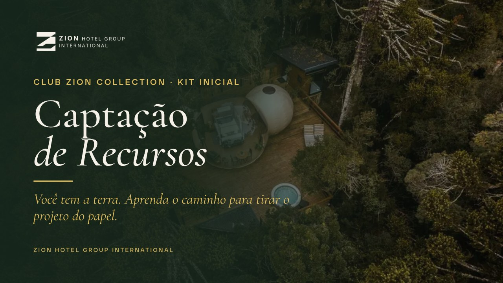

Aprenda o passo a passo para entender as fontes de capital, saber o que cada uma pede e montar o seu primeiro pedido. Para quem tem a terra e ainda não tem o capital.
Vídeo tutorial · cerca de 9 minutos.
Preencha o seu Mapa das Fontes e envie para a equipe Zion no WhatsApp para liberar a sua sessão estratégica de 45 min. No WhatsApp, a Zaya, assistente virtual da Zion, confere o Mapa e envia o link da agenda. Na sessão individual, a equipe olha o seu caso e indica o próximo passo. Quem tiver perfil é convidado para a Mentoria Zion.
Enviar meu Mapa no WhatsAppA Zion avalia cada caso. A sessão não é promessa de crédito, sócio, investimento ou resultado.
A Zion já operou vários glampings, tem os dois primeiros glampings pioneiros de referência no Brasil (Urubici e Florianópolis) e está desenvolvendo mais de 23 destinos. O seu destino pode ser o próximo.
Material educativo da Zion Hotel Group International: não é promessa de crédito, investidor, sociedade, renda ou retorno. Contratos, garantias e sociedade se decidem com advogado e contador. Dúvidas: WhatsApp +55 48 6137-1061.